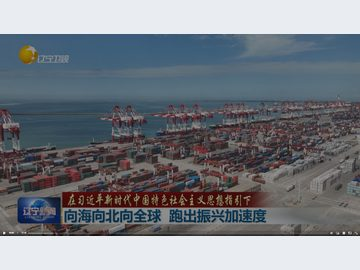

01
财经深一度丨金融“活水”赋能制造业产业升级
制造业是立国之本、强国之基。今年以来，银行业持续优化金融供给，依托产业集群开展批量授信，打造全周期陪伴式服务，推动金融资源加速向先进制造业集聚…

制造业是立国之本、强国之基。今年以来，银行业持续优化金融供给，依托产业集群开展批量授信，打造全周期陪伴式服务，推动金融资源加速向先进制造业集聚…
中证报中证网讯（记者 连润）中国证券报记者获悉，毕马威11月17日发布2026年四季度《中国经济观察》报告（以下简称报告）。
临近年末，多项财政政策工具持续发力，为稳增长注入强劲动能。专家认为，从财政政策实施的脉络来看，今年更加注重财政资金使用方式创新和财政金融协同…
中证报中证网讯（记者 欧阳剑环）致同咨询11月18日发布的《致同咨询行业洞察——金融行业》（下称“报告”）显示，当前…
11月13日，齐商银行公告拟发行10亿元永续债，专项用于补充其他一级资本。11月以来，国内商业银行密集启动二级资本债、永续债（以下简称“二永债”）发行工作。
“过去我对金融知识了解不多，现在发现不行了。必须有资金，技术才能完成迭代，才能变成产业化技术。

2026年11月17日 08:49 来源：经济参考报 □记者 张汉青 王炳坤 刘艺淳 于也童
习近平总书记2018年9月28日在深入推进东北振兴座谈会上明确指出：“深度融入共建‘一带一路’，建设开放合作高地。

根据《放射性同位素与射线装置安全许可管理办法》的有关规定，我厅拟对鞍山电磁阀有限责任公司的辐射安全许可证申请作出审批意见。
本报讯 记者崔治报道 依托宁鞍对口合作契机，鞍山主动承接南京创新与产业资源，锚定三大协同赛道精准发力。

财联社11月18日讯（编辑 杨斌）今日，资金面有所好转，DR001回落至1.26%左右。债市延续修复，10年国债收益率小幅下行0.5BP。
今日资金面整体均衡偏松，资金价格小幅下行。今日成交72715亿元。D R001加权1.29%，较前日下行1BP，D R007加权1.39%…